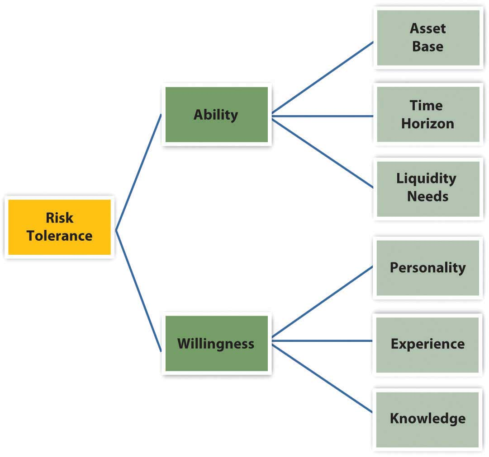
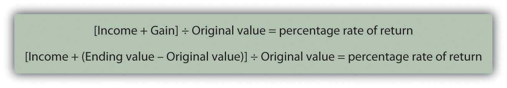
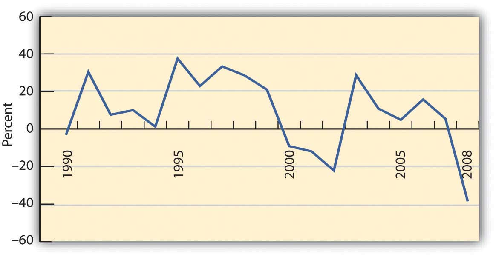
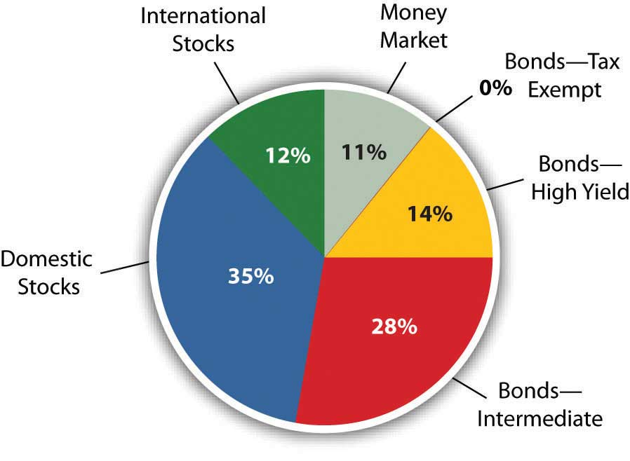
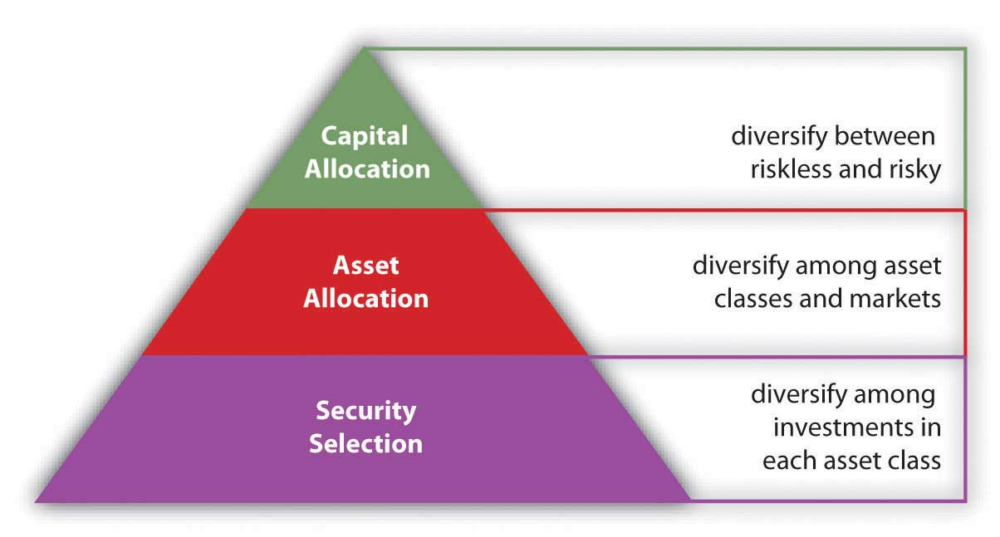

Saving to build wealth is investing. When people have too much money to spend immediately, that is, a surplus of disposable income, they become savers or investors. They transfer their surplus to individuals, companies, or governments that have a shortage or too little money to meet immediate needs. This is almost always done through an intermediary—a bank or broker—who can match up the surpluses and the shortages. If the capital markets work well, those who need money can get it, and those who can defer their need can try to profit from that. When you invest, you are transferring capital to those who need it on the assumption that they will be able to return your capital when you need or want it and that they will also pay you for its use in the meantime.
Investing happens over your lifetime. In your early adult years, you typically have little surplus to invest. Your first investments are in your home (although primarily financed with the debt of your mortgage) and then perhaps in planning for children’s education or for your retirement.
After a period of just paying the bills, making the mortgage, and trying to put something away for retirement, you may have the chance to accumulate wealth. Your income increases as your career progresses. You have fewer dependents (as children leave home), so your expenses decrease. You begin to think about your investment options. You have already been investing—in your home and retirement—but those investments have been prescribed by their specific goals.
You may reach this stage earlier or later in your life, but at some point, you begin to think beyond your immediate situation and look to increase your real wealth and to your future financial health. Investing is about that future.
Before looking at investment planning and strategy, it is important to take a closer look at the galaxy of investments and markets where investing takes place. Understanding how markets work, how different investments work, and how different investors can use investments is critical to understanding how to begin to plan your investment goals and strategies.
You have looked at using the money markets to save surplus cash for the short term. Investing is primarily about using the capital markets to invest surplus cash for the longer term. As in the money markets, when you invest in the capital markets, you are selling liquidity.
The capital markets developed as a way for buyers to buy liquidity. In Western Europe, where many of our ideas of modern finance began, those early buyers were usually monarchs or members of the nobility, raising capital to finance armies and navies to conquer or defend territories or resources. Many devices and markets were used to raise capital,For a thorough history of the evolution of finance and financial instruments, see Charles P. Kindleberger, A Financial History of Western Europe (London: George Allen & Unwin, Ltd., 1984). but the two primary methods that have evolved into modern times are the bond and stock markets. (Both are discussed in greater detail in Chapter 15 "Owning Stocks" and Chapter 16 "Owning Bonds", but a brief introduction is provided here to give you the basic idea of what they are and how they can be used as investments.)
In the United States, 47 percent of the adult population owns stocks or bonds, most through retirement accounts.John Sabelhaus, Michael Bogdan, and Daniel Schrass, “Equity and Bond Ownership in America, 2008,” Investment Company Institute and Securities Industry and Financial Markets Association, http://www.ici.org/pdf/rpt_08_equity_owners.pdf (accessed on May 20, 2009).
BondsPublicly issued and traded long-term debt used by corporations and governments. are debt. The bond issuer borrows by selling a bond, promising the buyer regular interest payments and then repayment of the principal at maturity. If a company wants to borrow, it could just go to one lender and borrow. But if the company wants to borrow a lot, it may be difficult to find any one investor with the capital and the inclination to make large a loan, taking a large risk on only one borrower. In this case the company may need to find a lot of lenders who will each lend a little money, and this is done through selling bonds.
A bond is a formal contract to repay borrowed money with interest (often referred to as the coupon) at fixed intervals. Corporations and governments (e.g., federal, state, municipal, and foreign) borrow by issuing bonds. The interest rate on the bond may be a fixed interest rateA bond interest rate that does not change over time, from issuance to maturity. or a floating interest rateA bond interest rate that changes over time, usually related to a benchmark rate such as the U.S. discount rate or prime rate. that changes as underlying interest rates—rates on debt of comparable companies—change. (Underlying interest rates include the prime rate that banks charge their most trustworthy borrowers and the target rates set by the Federal Reserve Bank.)
There are many features of bonds other than the principal and interest, such as the issue priceThe original market price of a bond at issuance. (the price you pay to buy the bond when it is first issued) and the maturity dateDate at which a bond matures, or the end of the bond’s term, when the bond must be redeemed. (when the issuer of the bond has to repay you). Bonds may also be “callable”: redeemableA bond that is eligible for redemption. before maturityThe date on which payment of a financial obligation is due, such as bond redemption date. (paid off early). Bonds may also be issued with various covenantsA condition placed on bond issuers (borrowers) to protect bondholders (lenders). or conditions that the borrower must meet to protect the bondholders, the lenders. For example, the borrower, the bond issuer, may be required to keep a certain level of cash on hand, relative to its short-term debts, or may not be allowed to issue more debt until this bond is paid off.
Because of the diversity and flexibility of bond features, the bond markets are not as transparent as the stock markets; that is, the relationship between the bond and its price is harder to determine. The U.S. bond market is now more than twice the size (in dollars of capitalization) of all the U.S. stock exchanges combined, with debt of more than $27 trillion by the end of 2007.Financial Industry Regulatory Authority (FINRA), http://apps.finra.org/ (accessed May 20, 2009).
U.S. Treasury bonds are auctioned regularly to banks and large institutional investors by the Treasury Department, but individuals can buy U.S. Treasury bonds directly from the U.S. government (http://www.treasurydirect.gov). To trade any other kind of bond, you have to go through a broker. The brokerage firm acts as a principal or dealer, buying from or selling to investors, or as an agent for another buyer or seller.
StocksShares issued to account for ownership, as defined by owners’ contributions to a corporation. or equity securities are shares of ownership. When you buy a share of stock, you buy a share of the corporation. The size of your share of the corporation is proportional to the size of your stock holding. Since corporations exist to create profit for the owners, when you buy a share of the corporation, you buy a share of its future profits. You are literally sharing in the fortunes of the company.
Unlike bonds, however, shares do not promise you any returns at all. If the company does create a profit, some of that profit may be paid out to owners as a dividendA share of corporate profit distributed to shareholders, usually as cash or corporate stock., usually in cash but sometimes in additional shares of stock. The company may pay no dividend at all, however, in which case the value of your shares should rise as the company’s profits rise. But even if the company is profitable, the value of its shares may not rise, for a variety of reasons having to do more with the markets or the larger economy than with the company itself. Likewise, when you invest in stocks, you share the company’s losses, which may decrease the value of your shares.
Corporations issue shares to raise capital. When shares are issued and traded in a public market such as a stock exchangeAn organized market for the trading of corporate shares conducted by members of the exchange., the corporation is “publicly traded.” There are many stock exchanges in the United States and around the world. The two best known in the United States are the New York Stock Exchange (now NYSE Euronext), founded in 1792, and the NASDAQ, a computerized trading system managed by the National Association of Securities Dealers (the “AQ” stands for “Automated Quotations”).
Only members of an exchange may trade on the exchange, so to buy or sell stocks you must go through a broker who is a member of the exchange. Brokers also manage your account and offer varying levels of advice and access to research. Most brokers have Web-based trading systems. Some discount brokers offer minimal advice and research along with minimal trading commissions and fees.
CommoditiesRaw materials—natural resources or agricultural products—used as inputs in processing goods and services. are resources or raw materials, including the following:
Commodity trading was formalized because of the risks inherent in producing commodities—raising and harvesting agricultural products or natural resources—and the resulting volatility of commodity prices. As farming and food production became mechanized and required a larger investment of capital, commodity producers and users wanted a way to reduce volatility by locking in prices over the longer term.
The answer was futures and forward contracts. FuturesA publicly traded contract to buy or sell an asset at a specified time and price in the future. and forward contractsA private contract to buy or sell an asset at a specified time and price in the future. or forwards are a form of derivativesFinancial instruments such as options, futures, forwards, securitized assets, and so on whose value is derived from the value of another asset., the term for any financial instrument whose value is derived from the value of another security. For example, suppose it is now July 2010. If you know that you will want to have wheat in May of 2011, you could wait until May 2011 and buy the wheat at the market price, which is unknown in July 2010. Or you could buy it now, paying today’s price, and store the wheat until May 2011. Doing so would remove your future price uncertainty, but you would incur the cost of storing the wheat.
Alternatively, you could buy a futures contract for May 2011 wheat in July 2010. You would be buying May 2011 wheat at a price that is now known to you (as stated in the futures contract), but you will not take delivery of the wheat until May 2011. The value of the futures contract to you is that you are removing the future price uncertainty without incurring any storage costs. In July 2010 the value of a contract to buy May 2011 wheat depends on what the price of wheat actually turns out to be in May 2011.
Forward contracts are traded privately, as a direct deal made between the seller and the buyer, while futures contracts are traded publicly on an exchange such as the Chicago Mercantile Exchange (CME) or the New York Mercantile Exchange (NYMEX).
When you buy a forward contract for wheat, for example, you are literally buying future wheat, wheat that doesn’t yet exist. Buying it now, you avoid any uncertainty about the price, which may change. Likewise, by writing a contract to sell future wheat, you lock in a price for your crop or a return for your investment in seed and fertilizer.
Futures and forward contracts proved so successful in shielding against some risk that they are now written for many more types of “commodities,” such as interest rates and stock market indices. More kinds of derivatives have been created as well, such as options. OptionsThe right but not the obligation to buy or sell at a specific price at a specific time in the future; commonly written on shares of stock as well as on stock indices, interest rates, and commodities. are the right but not the obligation to buy or sell at a specific price at a specific time in the future. Options are commonly written on shares of stock as well as on stock indices, interest rates, and commodities.
Derivatives such as forwards, futures, and options are used to hedge or protect against an existing risk or to speculate on a future price. For a number of reasons, commodities and derivatives are more risky than investing in stocks and bonds and are not the best choice for most individual investors.
A mutual fundA portfolio of investments created by an investment company such as a brokerage or bank. It is financed as the investment company sells shares of the fund to investors. For investors, a mutual fund provides a way to achieve maximum diversification with minimal transaction costs through economies of scale. is an investment portfolio consisting of securities that an individual investor can invest in all at once without having to buy each investment individually. The fund thus allows you to own the performance of many investments while actually buying—and paying the transaction cost for buying—only one investment.
Mutual funds have become popular because they can provide diverse investments with a minimum of transaction costs. In theory, they also provide good returns through the performance of professional portfolio managers.
An index fundA mutual fund designed to track the performance of an index for investors who seek diversification without having to select securities. is a mutual fund designed to mimic the performance of an index, a particular collection of stocks or bonds whose performance is tracked as an indicator of the performance of an entire class or type of security. For example, the Standard & Poor’s (S&P) 500 is an index of the five hundred largest publicly traded corporations, and the famous Dow Jones Industrial Average is an index of thirty stocks of major industrial corporations. An index fund is a mutual fund invested in the same securities as the index and so requires minimal management and should have minimal management fees or costs.
Mutual funds are created and managed by mutual fund companies or by brokerages or even banks. To trade shares of a mutual fund you must have an account with the company, brokerage, or bank. Mutual funds are a large component of individual retirement accounts and of defined contribution plans.
Mutual fund shares are valued at the close of trading each day and orders placed the next day are executed at that price until it closes. An exchange-traded fund (ETF)A fund that tracks an index or a commodity or a basket of assets but is traded like stocks on a stock exchange. is a mutual fund that trades like a share of stock in that it is valued continuously throughout the day, and trades are executed at the market price.
The ways that capital can be bought and sold is limited only by the imagination. When corporations or governments need financing, they invent ways to entice investors and promise them a return. The last thirty years has seen an explosion in financial engineeringThe use of mathematical modeling to create and value new financial instruments and markets., the innovation of new financial instruments through mathematical pricing models. This explosion has coincided with the ever-expanding powers of the computer, allowing professional investors to run the millions of calculations involved in sophisticated pricing models. The Internet also gives amateurs instantaneous access to information and accounts.
Much of the modern portfolio theory that spawned these innovations (i.e., the idea of using the predictability of returns to manage portfolios of investments) is based on an infinite time horizon, looking at performance over very long periods of time. This has been very valuable for institutional investors (e.g., pension funds, insurance companies, endowments, foundations, and trusts) as it gives them the chance to magnify returns over their infinite horizons.
For most individual investors, however, most portfolio theory may present too much risk or just be impractical. Individual investors don’t have an infinite time horizon. You have only a comparatively small amount of time to create wealth and to enjoy it. For individual investors, investing is a process of balancing the demands and desires of returns with the costs of risk, before time runs out.
Bonds are
Stocks are
Commodities are
Mutual funds are portfolios of investments designed to achieve maximum diversification with minimal cost through economies of scale.
Allison has a few hours to kill while her flight home is delayed. She loves her job as an analyst for a management consulting firm, but the travel is getting old. As she gazes at the many investment magazines and paperbacks on display and the several screens all tuned to financial news networks and watches people hurriedly checking their stocks on their mobile phones, she begins to think about her own investments. She has been paying her bills, paying back student loans and trying to save some money for a while. Her uncle just died and left her a bequest of $50,000. She is thinking of investing it since she is getting by on her salary and has no immediate plans for this windfall.
Allison is wondering how to get into some serious investing. She is thinking that since so many people seem to be interested in “Wall Street,” there must be money in it. There is no lack of information or advice about investing, but Allison isn’t sure how to get started.
Allison may not realize that there are as many different investment strategies as there are investors. The planning process is similar to planning a budget plan or savings plan. You figure out where you are, where you want to be, and how to get there. One way to get started is to draw up an individual investment policy statement.
Investment policy statementsA structured framework for investment planning based on the investor’s return objectives, risk tolerance, and constraints., outlines of the investor’s goals and constraints, are popular with institutional investors such as pension plans, insurance companies, or nonprofit endowments. Institutional investment decisions typically are made by professional managers operating on instructions from a higher authority, usually a board of directors or trustees. The directors or trustees may approve the investment policy statement and then leave the specific investment decisions up to the professional investment managers. The managers use the policy statement as their guide to the directors’ wishes and concerns.
This idea of a policy statement has been adapted for individual use, providing a helpful, structured framework for investment planning—and thinking. The advantages of drawing up an investment policy to use as a planning framework include the following:
A policy statement is written in two parts. The first part lists your return objectives and risk preferences as an investor. The second part lists your constraints on investment. It sometimes is difficult to reconcile the two parts. That is, you may need to adjust your statement to improve your chances of achieving your return objectives within your risk preferences without violating your constraints.
Defining return objectives is the process of quantifying the required annual return (e.g., 5 percent, 10 percent) necessary to meet your investment goals. If your investment goals are vague (e.g., to “increase wealth”), then any positive return will do. Usually, however, you have some specific goals—for example, to finance a child’s or grandchild’s education, to have a certain amount of wealth at retirement, to buy a sailboat on your fiftieth birthday, and so on.
Once you have defined goals, you must determine when they will happen and how much they will cost, or how much you will have to have invested to make your dreams come true. As explained in Chapter 4 "Evaluating Choices: Time, Risk, and Value", the rate of return that your investments must achieve to reach your goals depends on how much you have to invest to start with, how long you have to invest it, and how much you need to fulfill your goals.
As in Allison’s case, your goals may not be so specific. Your thinking may be more along the lines of “I want my money to grow and not lose value” or “I want the investment to provide a little extra spending money until my salary rises as my career advances.” In that case, your return objective can be calculated based on the role that these funds play in your life: safety net, emergency fund, extra spending money, or nest egg for the future.
However specific (or not) your goals may be, the quantified return objective defines the annual performance that you demand from your investments. Your portfolio can then be structured—you can choose your investments—such that it can be expected to provide that performance.
If your return objective is more than can be achieved given your investment and expected market conditions, then you know to scale down your goals, or perhaps find a different way to fund them. For example, if Allison wanted to stop working in ten years and start her own business, she probably would not be able to achieve this goal solely by investing her $50,000 inheritance, even in a bull (up) market earning higher rates of return.
As you saw in Chapter 10 "Personal Risk Management: Insurance" and Chapter 11 "Personal Risk Management: Retirement and Estate Planning", in investing there is a direct relationship between risk and return, and risk is costly. The nature of these relationships has fascinated and frustrated investors since the origin of capital markets and remains a subject of investigation, exploration, and debate. To invest is to take risk. To invest is to separate yourself from your money through actual distance—you literally give it to someone else—or through time. There is always some risk that what you get back is worth less (or costs more) than what you invested (a loss) or less than what you might have had if you had done something else with your money (opportunity cost). The more risk you are willing to take, the more potential return you can make, but the higher the risk, the more potential losses and opportunity costs you may incur.
Individuals have different risk tolerances. Your risk toleranceAn investor’s capacity for risk exposure, based on the ability and willingness to assume risk. is your ability and willingness to assume risk. Your ability to assume risk is based on your asset base, your time horizon, and your liquidity needs. In other words, your ability to take investment risks is limited by how much you have to invest, how long you have to invest it, and your need for your portfolio to provide cash—for use rather than reinvestment—in the meantime.
Your willingness to take risk is shaped by your “personality,” your experiences, and your knowledge and education. Attitudes are shaped by life experiences, and attitudes toward risk are no different. Figure 12.7 "Risk Tolerance" shows how your level of risk tolerance develops.
Figure 12.7 Risk Tolerance
Investment advisors may try to gauge your attitude toward risk by having you answer a series of questions on a formal questionnaire or by just talking with you about your investment approach. For example, an investor who says, “It’s more important to me to preserve what I have than to make big gains in the markets,” is relatively risk averseAn investor’s preference to minimize exposure to risk.. The investor who says, “I just want to make a quick profit,” is probably more of a risk seeker.
Once you have determined your return objective and risk tolerance (i.e., what it will take to reach your goals and what you are willing and able to risk to get there) you may have to reconcile the two. You may find that your goals are not realistic unless you are willing to take on more risk. If you are unwilling or unable to take on more risk, you may have to scale down your goals.
Defining constraints is a process of recognizing any limitation that may impede or slow or divert progress toward your goals. The more you can anticipate and include constraints in your planning, the less likely they will throw you off course. Constraints include the following:
Liquidity needs, or the need to use cash, can slow your progress from investing because you have to divert cash from your investment portfolio in order to spend it. In addition you will have ongoing expenses from investing. For example, you will have to use some liquidity to cover your transaction costs such as brokerage fees and management fees. You may also wish to use your portfolio as a source of regular income or to finance asset purchases, such as the down payment on a home or a new car or new appliances.
While these may be happy transactions for you, for your portfolio they are negative events, because they take away value from your investment portfolio. Since your portfolio’s ability to earn return is based on its value, whenever you take away from that value, you are reducing its ability to earn.
Time is another determinant of your portfolio’s earning power. The more time you have to let your investments earn, the more earnings you can amass. Or, the more time you have to reach your goals, the more slowly you can afford to get there, earning less return each year but taking less risk as you do. Your time horizon will depend on your age and life stage and on your goals and their specific liquidity needs.
Tax obligations are another constraint, because paying taxes takes value away from your investments. Investment value may be taxed in many ways (as income tax, capital gains tax, property tax, estate tax, or gift tax) depending on how it is invested, how its returns are earned, and how ownership is transferred if it is bought or sold.
Investors typically want to avoid, defer, or minimize paying taxes, and some investment strategies will do that better than others. In any case, your individual tax liabilities may become a constraint in determining how the portfolio earns to best avoid, defer, or minimize taxes.
Legalities also can be a constraint if the portfolio is not owned by you as an individual investor but by a personal trust or a family foundation. Trusts and foundations have legal constraints defined by their structure.
“Unique circumstances” refer to your individual preferences, beliefs, and values as an investor. For example, some investors believe in socially responsible investing (SRI), so they want their funds to be invested in companies that practice good corporate governance, responsible citizenship, fair trade practices, or environmental stewardship.
Some investors don’t want to finance companies that make objectionable products or by-products or have labor or trade practices reflecting objectionable political views. DivestmentThe sale of an asset to reverse an invested position. is the term for taking money out of investments. Grassroots political movements often include divestiture campaigns, such as student demands that their universities stop investing in companies that do business with nondemocratic or oppressive governments.
Socially responsible investmentAn investment strategy to achieve both ethical and financial goals. is the term for investments based on ideas about products or businesses that are desirable or objectionable. These qualities are in the eye of the beholder, however, and vary among investors. Your beliefs and values are unique to you and to your circumstances in investing and may change over time.
Having mapped out your goals and determined the risks you are willing to take, and having recognized the limitations you must work with, you and/or investment advisors can now choose the best investments. Different advisors may have different suggestions based on your investment policy statement. The process of choosing involves knowing what returns and risks investments have produced in the past, what returns and risks they are likely to have in the future, and how the returns and risks are related—or not—to each other.
The investment policy statement provides a useful framework for investment planning because
Constraints or restrictions to an investment strategy are the investor’s
In collaboration with classmates, conduct an online investigation into socially responsible investing. See the following Web sites:
On the basis of your investigation, outline and discuss the different forms and purposes of SRI. Which form and purpose appeal most to you and why? What investments might you make, and what investments might you specifically avoid, to express your beliefs and values? Do you think investment planning could ever have a role in bringing about social change?
You want to choose investments that will combine to achieve the return objectives and level of risk that’s right for you, but how do you know what the right combination will be? You can’t predict the future, but you can make an educated guess based on an investment’s past history. To do this, you need to know how to read or use the information available. Perhaps the most critical information to have about an investment is its potential return and susceptibility to types of risk.
Returns are always calculated as annual rates of return, or the percentage of return created for each unit (dollar) of original value. If an investment earns 5 percent, for example, that means that for every $100 invested, you would earn $5 per year (because $5 = 5% of $100).
Returns are created in two ways: the investment creates income or the investment gains (or loses) value. To calculate the annual rate of return for an investment, you need to know the income created, the gain (loss) in value, and the original value at the beginning of the year. The percentage return can be calculated as in Figure 12.8 "Calculating Percentage Return".
Figure 12.8 Calculating Percentage Return
Note that if the ending value is greater than the original value, then Ending value − Original value > 0 (is greater than zero), and you have a gain that adds to your return. If the ending value is less, then Ending value − Original value < 0 (is less than zero), and you have a loss that detracts from your return. If there is no gain or loss, if Ending value − Original value = 0 (is the same), then your return is simply the income that the investment created.
For example, if you buy a share of stock for $100, and it pays no dividend, and a year later the market price is $105, then your return = [0 + (105 − 100)] ÷ 100 = 5 ÷ 100 = 5%. If the same stock paid a dividend of $2, then your return = [2 + (105 − 100)] ÷ 100 = 7 ÷ 100 = 7%.
If the information you have shows more than one year’s results, you can calculate the annual return using what you learned in Chapter 4 "Evaluating Choices: Time, Risk, and Value" about the relationships of time and value. For example, if an investment was worth $10,000 five years ago and is worth $14,026 today, then $10,000 × (1+ r)5 = $14,026. Solving for r—the annual rate of return, assuming you have not taken the returns out in the meantime—and using a calculator, a computer application, or doing the math, you get 7 percent. So the $10,000 investment must have earned at a rate of 7 percent per year to be worth $14,026 five years later, other factors being equal.
While information about current and past returns is useful, investment professionals are more concerned with the expected returnThe return expected for an investment based on its average historical performance. Statistically, it is the mean or average of the investment’s past performance. for the investment, that is, how much it may be expected to earn in the future. Estimating the expected return is complicated because many factors (i.e., current economic conditions, industry conditions, and market conditions) may affect that estimate.
For investments with a long history, a strong indicator of future performance may be past performance. Economic cycles fluctuate, and industry and firm conditions vary, but over the long run, an investment that has survived has weathered all those storms. So you could look at the average of the returns for each year. There are several ways to do the math, but if you look at the average return for different investments of the same asset class or type (e.g., stocks of large companies) you could compare what they have returned, on average, over time. Figure 12.9 "S&P 500 Average Annual Return" shows average returns on investments in the S&P 500, an index of large U.S. companies since 1990.
Figure 12.9 S&P 500 Average Annual ReturnBased on data from Standard & Poor’s, Inc., http://www2.standardandpoors.com/spf/xls/index/MONTHLY.xls (accessed November 24, 2009).
If the time period you are looking at is long enough, you can reasonably assume that an investment’s average return over time is the return you can expect in the next year. For example, if a company’s stock has returned, on average, 9 percent per year over the last twenty years, then if next year is an average year, that investment should return 9 percent again. Over the eighteen-year span from 1990 to 2008, for example, the average return for the S&P 500 was 9.16 percent. Unless you have some reason to believe that next year will not be an average year, the average return can be your expected return. The longer the time period you consider, the less volatility there will be in the returns, and the more accurate your prediction of expected returns will be.
Returns are the value created by an investment, through either income or gains. Returns are also your compensation for investing, for taking on some or all of the risk of the investment, whether it is a corporation, government, parcel of real estate, or work of art. Even if there is no risk, you must be paid for the use of liquidity that you give up to the investment (by investing).
Returns are the benefits from investing, but they must be larger than its costs. There are at least two costs to investing: the opportunity cost of giving up cash and giving up all your other uses of that cash until you get it back in the future and the cost of the risk you take—the risk that you won’t get it all back.
Investment risk is the idea that an investment will not perform as expected, that its actual return will deviate from the expected return. Risk is measured by the amount of volatility, that is, the difference between actual returns and average (expected) returns. This difference is referred to as the standard deviationIn finance, the statistical measure that calculates the frequency and amount by which actual returns differ from the average or expected returns.. Returns with a large standard deviation (showing the greatest variance from the average) have higher volatility and are the riskier investments.
As Figure 12.9 "S&P 500 Average Annual Return" shows, an investment may do better or worse than its average. Thus, standard deviation can be used to define the expected range of investment returns. For the S&P 500, for example, the standard deviation from 1990 to 2008 was 19.54 percent. So, in any given year, the S&P 500 is expected to return 9.16 percent but its return could be as high as 67.78 percent or as low as −49.46 percent, based on its performance during that specific period.
What risks are there? What would cause an investment to unexpectedly over- or underperform? Starting from the top (the big picture) and working down, there are
Economic risks are risks that something will upset the economy as a whole. The economic cycle may swing from expansion to recession, for example; inflation or deflation may increase, unemployment may increase, or interest rates may fluctuate. These macroeconomic factors affect everyone doing business in the economy. Most businesses are cyclical, growing when the economy grows and contracting when the economy contracts.
Consumers tend to spend more disposable income when they are more confident about economic growth and the stability of their jobs and incomes. They tend to be more willing and able to finance purchases with debt or with credit, expanding their ability to purchase durable goods. So, demand for most goods and services increases as an economy expands, and businesses expand too. An exception is businesses that are countercyclical. Their growth accelerates when the economy is in a downturn and slows when the economy expands. For example, low-priced fast food chains typically have increased sales in an economic downturn because people substitute fast food for more expensive restaurant meals as they worry more about losing their jobs and incomes.
Industry risks usually involve economic factors that affect an entire industry or developments in technology that affect an industry’s markets. An example is the effect of a sudden increase in the price of oil (a macroeconomic event) on the airline industry. Every airline is affected by such an event, as an increase in the price of airplane fuel increases airline costs and reduces profits. An industry such as real estate is vulnerable to changes in interest rates. A rise in interest rates, for example, makes it harder for people to borrow money to finance purchases, which depresses the value of real estate.
Company risk refers to the characteristics of specific businesses or firms that affect their performance, making them more or less vulnerable to economic and industry risks. These characteristics include how much debt financing the company uses, how well it creates economies of scale, how efficient its inventory management is, how flexible its labor relationships are, and so on.
The asset classA kind of investment distinguished by its uses and market (e.g., stock, bonds, fine art, real estate, currency). that an investment belongs to can also bear on its performance and risk. Investments (assets) are categorized in terms of the markets they trade in. Broadly defined, asset classes include
Within those broad categories, there are finer distinctions. For example, corporate stock is classified as large cap, mid cap, or small cap, depending on the size of the corporation as measured by its market capitalization (the aggregate value of its stock). Bonds are distinguished as corporate or government and as short-term, intermediate-term, or long-term, depending on the maturity date.
Risks can affect entire asset classes. Changes in the inflation rate can make corporate bonds more or less valuable, for example, or more or less able to create valuable returns. In addition, changes in a market can affect an investment’s value. When the stock market fell unexpectedly and significantly, as it did in October of 1929, 1987, and 2008, all stocks were affected, regardless of relative exposure to other kinds of risk. After such an event, the market is usually less efficient or less liquid; that is, there is less trading and less efficient pricing of assets (stocks) because there is less information flowing between buyers and sellers. The loss in market efficiency further affects the value of assets traded.
As you can see, the link between risk and return is reciprocal. The question for investors and their advisors is: How can you get higher returns with less risk?
Investment risk is exposure to
Every investor wants to maximize return, the earnings or gains from giving up surplus cash. And every investor wants to minimize risk, because it is costly. To invest is to assume risk, and you assume risk expecting to be compensated through return. The more risk assumed, the more the promised return. So, to increase return you must increase risk. To lessen risk, you must expect less return, but another way to lessen risk is to diversify—to spread out your investments among a number of different asset classes. Investing in different asset classes reduces your exposure to economic, asset class, and market risks.
Concentrating investment concentrates risk. Diversifying investments spreads risk by having more than one kind of investment and thus more than one kind of risk. To truly diversify, you need to invest in assets that are not vulnerable to one or more kinds of risk. For example, you may want to diversify
To diversify well, you have to look at your collection of investments as a whole—as a portfolio—rather than as a gathering of separate investments. If you choose the investments well, if they are truly different from each other, the whole can actually be more valuable than the sum of its parts.
In traditional portfolio theory, there are three levels or steps to diversifying: capital allocation, asset allocation, and security selection.
Capital allocationA strategy of diversifying a portfolio between risky and riskless assets. is diversifying your capital between risky and riskless investments. A “riskless” asset is the short-term (less than ninety-day) U.S. Treasury bill. Because it has such a short time to maturity, it won’t be much affected by interest rate changes, and it is probably impossible for the U.S. government to become insolvent—go bankrupt—and have to default on its debt within such a short time.
The capital allocation decision is the first diversification decision. It determines the portfolio’s overall exposure to risk, or the proportion of the portfolio that is invested in risky assets. That, in turn, will determine the portfolio’s level of return.
The second diversification decision is asset allocationThe strategy of achieving portfolio diversification by investing in different asset classes., deciding which asset classes, and therefore which risks and which markets, to invest in. Asset allocations are specified in terms of the percentage of the portfolio’s total value that will be invested in each asset class. To maintain the desired allocation, the percentages are adjusted periodically as asset values change. Figure 12.11 "Proposed Asset Allocation" shows an asset allocation for an investor’s portfolio.
Figure 12.11 Proposed Asset Allocation
Asset allocation is based on the expected returns and relative risk of each asset class and how it will contribute to the return and risk of the portfolio as a whole. If the asset classes you choose are truly diverse, then the portfolio’s risk can be lower than the sum of the assets’ risks.
One example of an asset allocation strategy is life cycle investingAn investment strategy in which asset allocation is based on the investor’s age or stage of life.—changing your asset allocation as you age. When you retire, for example, and forgo income from working, you become dependent on income from your investments. As you approach retirement age, therefore, you typically shift your asset allocation to less risky asset classes to protect the value of your investments.
Security selectionThe process of choosing individual securities to be included in the portfolio. is the third step in diversification, choosing individual investments within each asset class. Here is the chance to achieve industry or sector and company diversification. For example, if you decided to include corporate stock in your portfolio (asset allocation), you decide which corporation’s stock to invest in. Choosing corporations in different industries, or companies of different sizes or ages, will diversify your stock holdings. You will have less risk than if you invested in just one corporation’s stock. Diversification is not defined by the number of investments but by their different characteristics and performance.
Capital allocation decides the amount of overall risk in the portfolio; asset allocation tries to maximize the return you can get for that amount of risk. Security selection further diversifies within each asset class. Figure 12.12 "Levels of Diversification" demonstrates the three levels of diversification.
Figure 12.12 Levels of Diversification
Just as life cycle investing is a strategy for asset allocation, investing in index funds is a strategy for security selection. Indexes are a way of measuring the performance of an entire asset class by measuring returns for a portfolio containing all the investments in that asset class. Essentially, the index becomes a benchmarkA standard, often an index of securities, representing an industry or asset class and used as an indicator of growth potential or as a basis of comparison for similar of disparate industries or assets. for the asset class, a standard against which any specific investment in that asset class can be measured. An index fund is an investment that holds the same securities as the index, so it provides a way for you to invest in an entire asset class without having to select particular securities. For example, if you invest in the S&P 500 Index fund, you are investing in the five hundred largest corporations in the United States—the asset class of large corporations.
There are indexes and index funds for most asset classes. By investing in an index, you are achieving the most diversification possible for that asset class without having to make individual investments, that is, without having to make any security selection decisions. This strategy of bypassing the security selection decision is called passive managementAn investment strategy that does not include security selection within an asset class; the investment is expected to perform as well as the benchmark index.. It also has the advantage of saving transaction costs (broker’s fees) because you can invest in the entire index through only one transaction rather than the many transactions that picking investments would require.
In contrast, making security selection decisions to maximize returns and minimize risks is called active managementAn investment strategy that includes security selection within an asset class in order to outperform the asset class benchmark.. Investors who favor active management feel that the advantages of picking specific investments, after careful research and analysis, are worth the added transaction costs. Actively managed portfolios may achieve diversification based on the quality, rather than the quantity, of securities selected.
Also, asset allocation can be actively managed through the strategy of market timingThe practice of basing investment strategy on predictions of future market changes or on asset return forecasts.—shifting the asset allocation in anticipation of economic shifts or market volatility. For example, if you forecast a period of higher inflation, you would reduce allocation in fixed-rate bonds or debt instruments, because inflation erodes the value of the fixed repayments. Until the inflation passes, you would shift your allocation so that more of your portfolio is in stocks, say, and less in bonds.
It is rare, however, for active investors or investment managers to achieve superior results over time. More commonly, an investment manager is unable to achieve consistently better returns within an asset class than the returns of the passively managed index.Much research, some of it quite academic, has been done on this subject. For a succinct (and instructive) summary of the discussion, see Burton G. Malkiel, A Random Walk Down Wall Street, 10th ed. (New York: W. W. Norton & Company, Inc., 2007).
A portfolio strategy involves